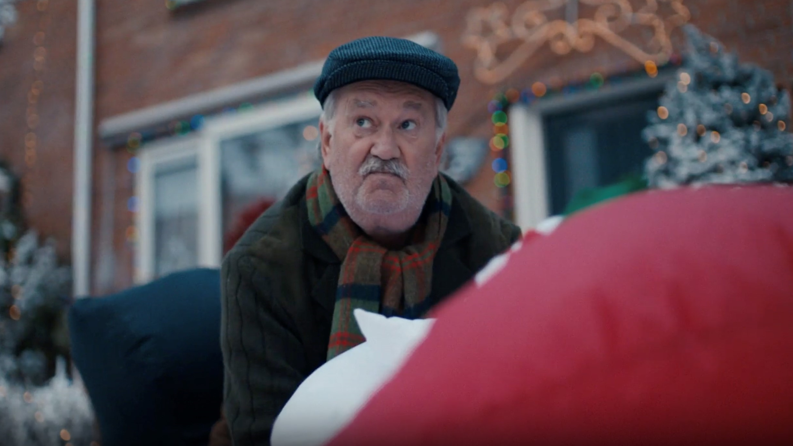
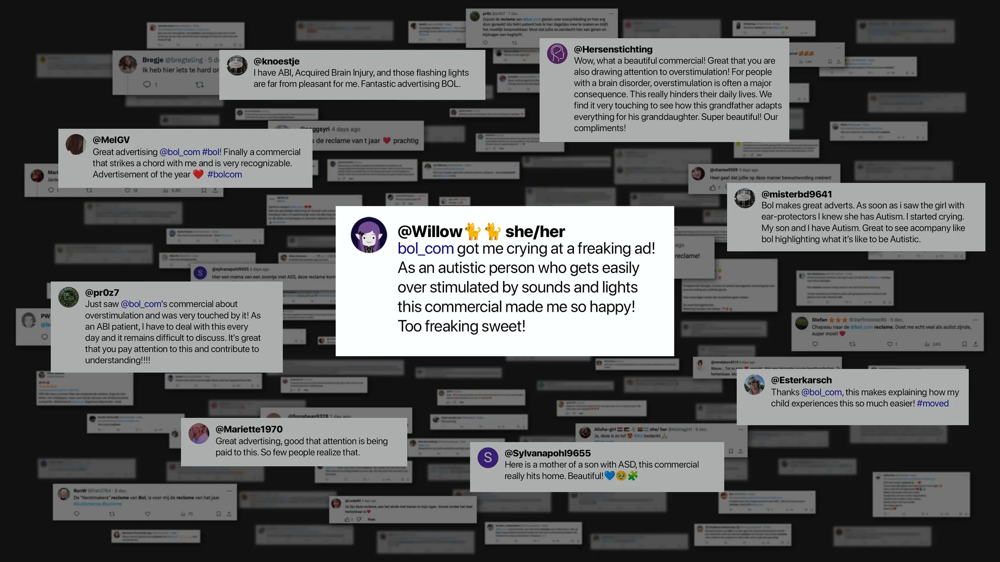

Bol — A More
Inclusive Christmas

Challenge
For bol, Christmas is the most important commercial moment of the year — and the hardest to cut through. Every brand goes big in December. But the bigger question was whether bol was actually living up to its own promise. "De winkel van ons allemaal" is a generous claim. And yet Christmas advertising almost universally tells the same story: abundance, a particular kind of togetherness, one version of what the holidays are supposed to look like. One in five people in the Netherlands and Belgium find that version actively overwhelming. If bol really was for everyone, it needed to show it.
Approach
The strategy started with listening — spending real time with the neurodivergent community to understand what the holidays actually feel like when the world isn't built for you. From that research came a story that was specific and universal at once. A grandfather takes down his beloved Christmas decorations in the middle of the holidays because his granddaughter gets overstimulated by the lights. A non-normative Christmas story, but also the oldest kind: love, and the quiet adjustments people make for each other without being asked. The girl was deliberately cast as a girl, because autism is far more frequently recognised in boys. The song was recorded with Bente, an artist who openly represents the neurodivergent community.
Outcome
The campaign reached 95% of adults in the Netherlands and 96% in Belgium. Ad recall hit 76%. Bol became the number one most trusted Christmas gift store in the Netherlands and earned coverage across NOS Jeugdjournaal, RTL Nieuws, Hart van Nederland and De Volkskrant. The response that mattered most, though, came from people writing long personal letters to customer service — saying they finally felt seen. For the first time ever.
